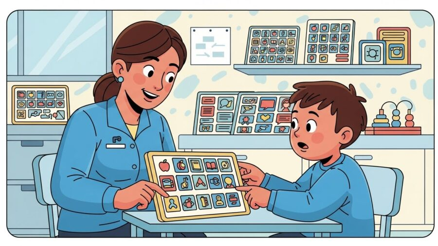
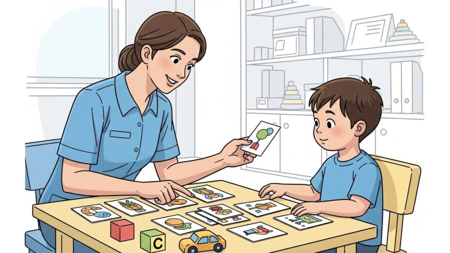
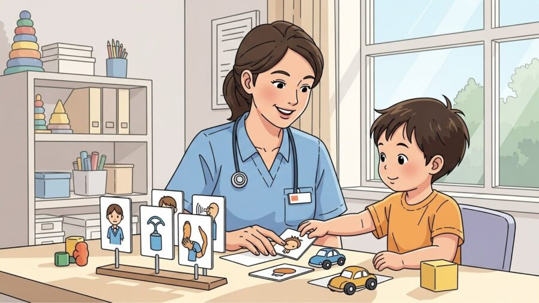
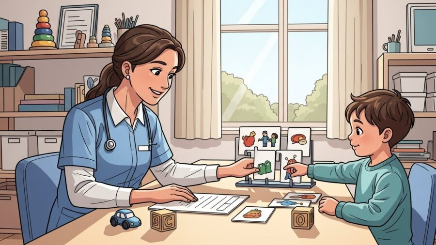
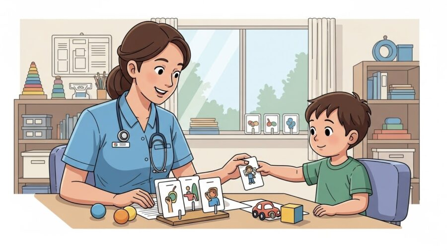

Terapias e Abordagens
Terapias e Abordagens
14 de janeiro de 2026

Comunicação, vínculo e desenvolvimento construídos no dia a dia
A fonoaudiologia no autismo em Porto Alegre é um dos pilares mais importantes no acompanhamento do desenvolvimento infantil. Para muitas famílias, ela representa o início de um caminho de compreensão, conexão e troca real com seus filhos. Mais do que estimular palavras, a fonoaudiologia trabalha algo muito mais profundo: a intenção de se comunicar, de ser entendido e de se relacionar com o outro.

No bairro Moinhos de Vento, uma das regiões mais tradicionais e estruturadas da cidade, a HD 360 Moinhos atua como referência no atendimento fonoaudiológico voltado ao Transtorno do Espectro Autista (TEA), reunindo experiência clínica, equipe altamente qualificada e uma abordagem que une conhecimento técnico, sensibilidade e acolhimento familiar.
Este conteúdo foi desenvolvido para falar de forma profunda, clara e humana sobre como a fonoaudiologia ajuda crianças com TEA, quando ela é indicada, como são as terapias, quais resultados podem ser construídos ao longo do tempo e por que escolher uma clínica especializada em Porto Alegre, especialmente no Moinhos de Vento, faz diferença real na evolução da criança.
Quando se fala em autismo, é comum associar imediatamente à dificuldade de fala. Mas a comunicação é um conceito muito mais amplo. Ela envolve:

Muitas crianças com TEA se comunicam, mas de formas que nem sempre são compreendidas pelo ambiente. A frustração surge justamente quando a criança tenta se expressar e não encontra resposta adequada.
A fonoaudiologia entra nesse ponto como uma ponte: ela ajuda a organizar, ampliar e dar funcionalidade às formas de comunicação que a criança já apresenta, além de estimular novas possibilidades.
A fonoaudiologia é a área da saúde responsável por acompanhar e intervir nos aspectos relacionados à linguagem, fala, comunicação, audição e funções orais. No contexto do TEA, o foco principal está na linguagem funcional e social, ou seja, na capacidade da criança de usar a comunicação para interagir com o mundo.

Na prática, o trabalho fonoaudiológico busca:
Na HD 360 Moinhos, esse trabalho é feito respeitando o tempo da criança, suas particularidades sensoriais e seu perfil individual de desenvolvimento.

A fonoaudiologia pode ser indicada em diferentes momentos da infância. Em muitos casos, a avaliação precoce permite identificar caminhos de intervenção mais eficazes.
Alguns sinais que costumam levar as famílias a buscar avaliação fonoaudiológica incluem:
É importante reforçar que cada criança tem seu ritmo, e a fonoaudiologia não trabalha com comparações, mas com potenciais.
Na HD 360 Moinhos, localizada no bairro Moinhos de Vento, Porto Alegre/RS, a avaliação fonoaudiológica é um processo cuidadoso e aprofundado. Ela não se resume a testes formais, mas envolve observação clínica, interação e escuta da família.

Durante a avaliação, o fonoaudiólogo observa:
Essas informações permitem traçar um plano terapêutico individualizado, com objetivos claros e funcionais.
As sessões de fonoaudiologia no autismo em Porto Alegre são planejadas para serem lúdicas, estruturadas e significativas. A criança aprende se comunicando dentro de contextos reais de interação, e não apenas repetindo palavras.
Na prática, as sessões podem envolver:
Na HD 360 Moinhos, o ambiente terapêutico é organizado para oferecer previsibilidade e segurança, fatores essenciais para que a criança se engaje na interação.
Para algumas crianças, a fala não é o primeiro caminho de comunicação. A Comunicação Alternativa e Aumentativa (CAA) é um recurso fundamental nesses casos.
Ela pode incluir:
Esses recursos não impedem o desenvolvimento da fala. Pelo contrário, ajudam a criança a compreender o valor da comunicação, reduzem frustrações e favorecem avanços significativos.
Os ganhos da fonoaudiologia vão muito além da fala em si. Entre os benefícios mais observados estão:
Cada pequena conquista representa um avanço importante na qualidade de vida da criança.
Na HD 360 Moinhos, a fonoaudiologia não atua de forma isolada. O trabalho é integrado com outras áreas do desenvolvimento infantil, como terapia ocupacional, psicologia e intervenções baseadas em evidências.
Essa atuação integrada permite:
A HD 360 Moinhos possui ampla experiência no atendimento a crianças com TEA e se destaca em Porto Alegre por oferecer:
📍 Localização: Bairro Moinhos de Vento, Porto Alegre/RS
Aqui, cada criança é vista de forma única, e cada avanço é construído com respeito, técnica e empatia.
A fonoaudiologia no autismo em Porto Alegre é, acima de tudo, um trabalho de conexão humana. Comunicar-se é participar do mundo, expressar desejos, compartilhar emoções e construir relações.
No Moinhos de Vento, a HD 360 Moinhos oferece um espaço onde ciência, cuidado e acolhimento caminham juntos para ajudar crianças a encontrarem sua própria forma de se comunicar e se conectar com o mundo.
Leia também